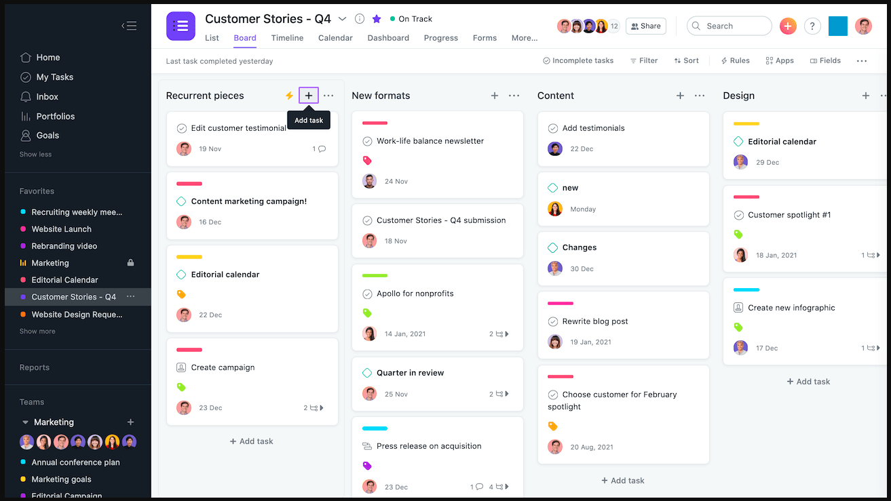
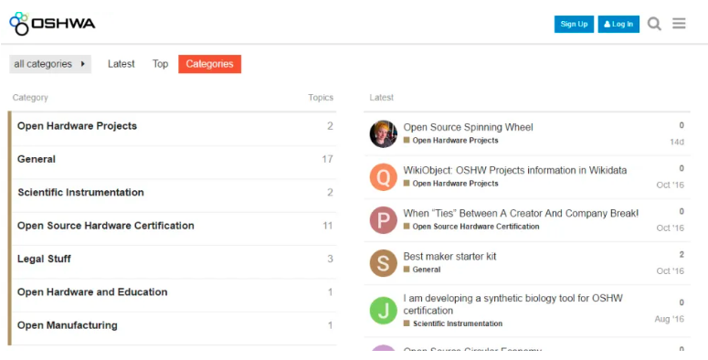
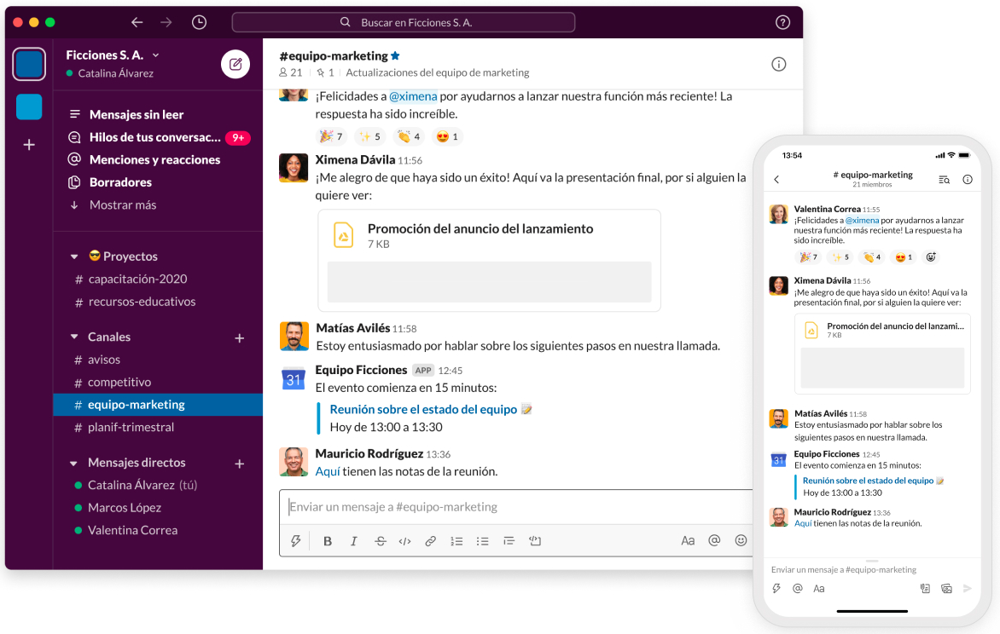
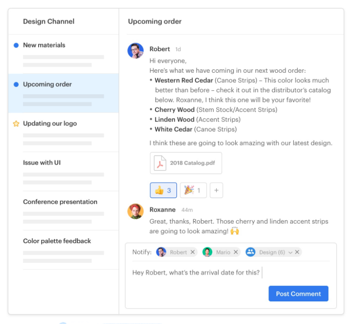
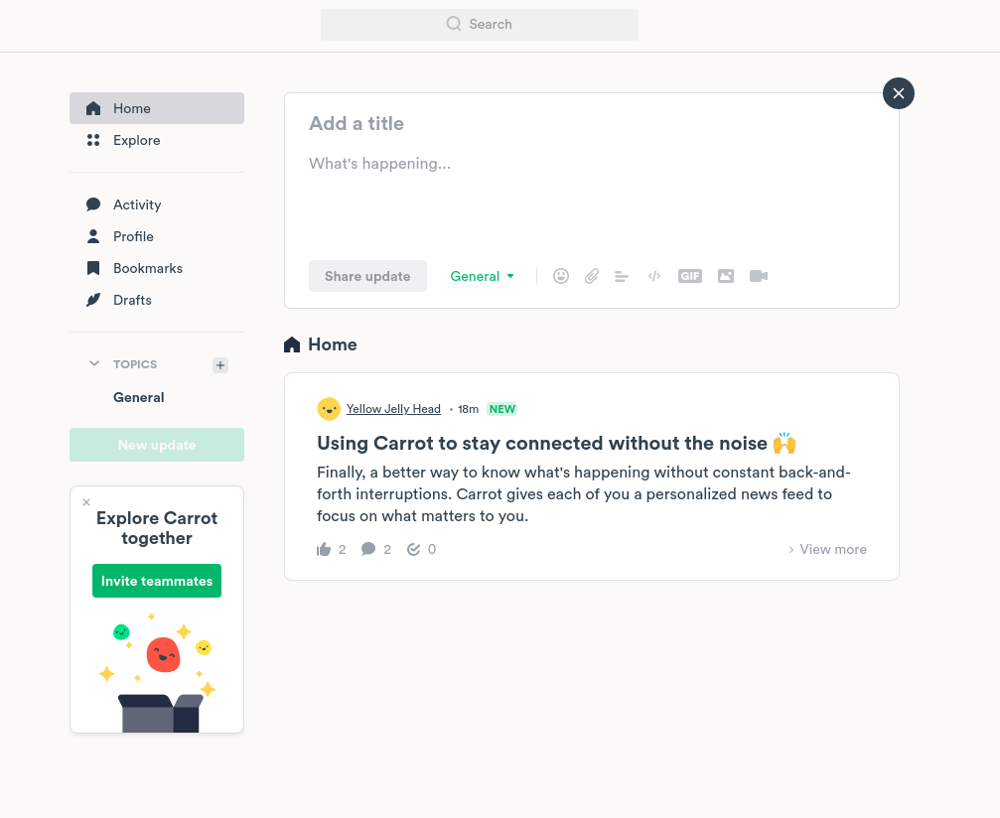
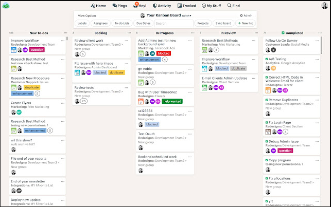
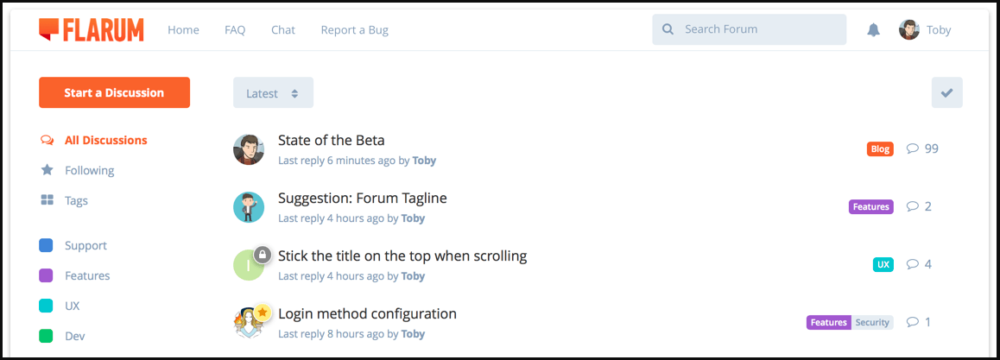
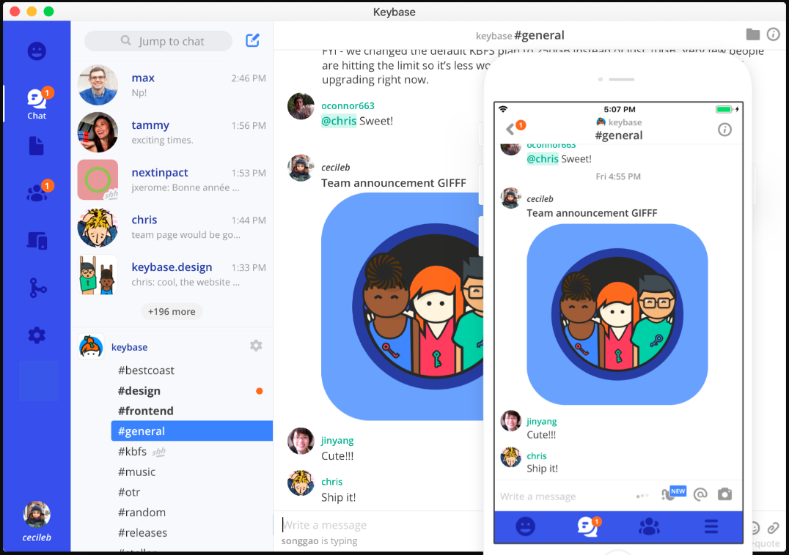
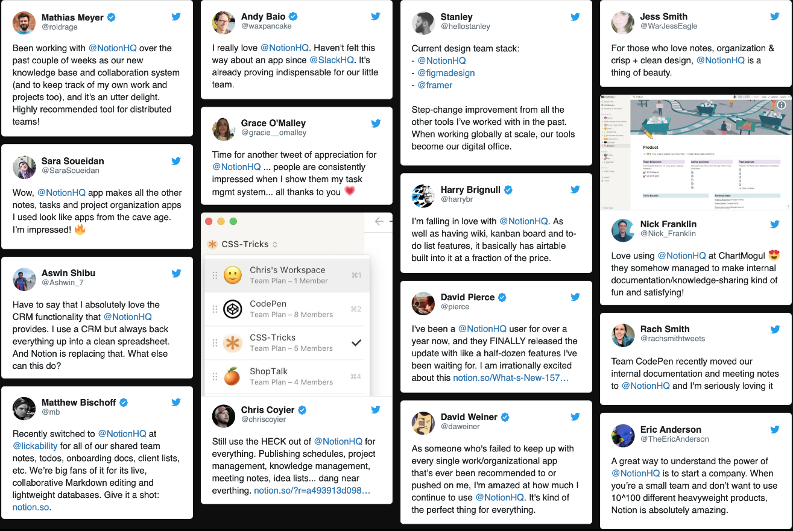

10 Plataformas que te ayudarán en la gestión de tu grupo de trabajo.
Contents
10 Plataformas que te ayudarán en la gestión de tu grupo de trabajo.¶
El manejo de los equipos de trabajo es interés constante para Open Science Labs, porque tenemos la convicción de que un equipo de trabajo bien manejado puede crecer en conjunto y construir mejores resultados para la ciencia abierta.
Ya en artículos anteriores hemos hablado de las herramientas que pueden utilizarse en el manejo de investigación reproducible en equipos de trabajo, o cuáles son los aspectos clave a tener en cuenta en el manejo de equipos de trabajo de ciencia abierta, y en este artículo hemos querido profundizar un poco más y avanzar en mostrarte nuestra perspectiva del propósito de examinar no sólo las herramientas utilizadas, sino también las prácticas de trabajo en equipo.
Los equipos de trabajo y su organización.¶
Recientemente ha sido muy difundido este artículo) en el cual Mike Crittenden muestra su perspectiva no sólo de las herramientas que se utilizan en las comunicaciones internas, sino también de cómo unas prácticas comunicativas inadecuadas pueden conducir a retrabajo y estrés en los equipos.
La premisa del autor en su artículo es que en muchas ocasiones la comunicación en los equipos de trabajo genera un problema adicional cuando algunos temas que deberían trabajarse en mayor profundidad y con mayor dedicación, se acumulan al verterse en herramientas pensadas para conversaciones breves y puntuales.
Este problema adicional que mencionamos tiene varias aristas. En primer lugar, muchas de las herramientas de colaboración pensadas para equipos de desarrollo tienen, además de las conexiones con repositorios, también espacios de chats (canales) para que los equipos puedan tener un espacio de conversación. Sin embargo, estos chats que están, generalmente, pensados para conversaciones de alcance temporal corto, no cuentan con dispositivos que faciliten su seguimiento y, pese a ello, terminan utilizándose para conversaciones que pueden nutrirse de ser llevadas, por ejemplo, a través de una discusión en el manejador de issues de los proyectos en un repositorio como Github.
Vaciar conversaciones con detalles técnicos, diálogos en grupos de chat, en ocasiones conversaciones paralelas, interrumpidas por cualquier integrante del grupo con algún sticker o pregunta no relacionada, sin lugar a dudas hacen mucho más complicado llevar el seguimiento a detalles que, por ser determinantes para el desempeño del equipo o de alguna tarea, seguro se benefician de un trabajo más individualizado en un espacio que posibilite su seguimiento y sistematización posteriores.
No vamos a construir una crítica a ultranza del uso de chats en las comunicaciones grupales, de hecho, tienen un papel muy importante en el tratamiento de decisiones muy puntuales, recordatorios o, incluso, con propósitos de distención y relajación en el equipo de trabajo, especialmente si se trabaja de forma remota. Sin embargo, sostenemos la idea de que los grupos de trabajo necesitan que la gestión de sus procesos internos se adecúe al trabajo que realizan, a fin de facilitarlo sin hacerlo excesivamente complejo, y sabemos que hay plataformas que pueden hacerlo posible.
Prácticas sanas en los equipos de trabajo.¶
Todo equipo de trabajo gira en torno, al menos, de un proyecto, los proyectos se organizan en torno a hitos y éstos en función de tareas y actividades cuya concresión debe organizarse y gestionarse. En medio de todo esto, ocurre el flujo de presupuestos y asignación de recursos financieros pero también de tiempo.
Los equipos de trabajo en desarrollo de software no son la excepción en este sentido. Aunque, en muchas ocasiones, se trate de equipos pequeños y no de uno, sino de varios proyectos, resulta vital identificar los componentes y quienes lideran cada uno de sus procesos. Por ello Organizar las tareas, definir los flujos de información para la gestión de actividades y hacer seguimiento de los alcances, logros y problemas del equipo, a menudo requiere no sólo del uso de una herramienta que lo facilite, sino también que el equipo asimile y haga propias las prácticas necesarias para ello, haciéndolas hábitos colectivos.
Si nos centramos de forma estricta en la organización del trabajo, sabemos cómo los equipos de ciencia abierta deben cultivar algunas prácticas, y ahora sabemos que esto puede lograrse con el fomento en el uso de dispositivos que las faciliten:
Control de versiones integrado a los dispositivos de comunicación,
Manejo de issues y sub-grupos en tus repositorios,
Metodología ágil para identificar hitos, metas, tareas y seguimiento,
Entrenamiento en políticas de ciencia abierta para todo el equipo de trabajo, e
Incentivo a la ciencia abierta apoyando el desarrollo de habilidades no sólo para el desarrollo, sino también para la sistematización y la socialización de los avances.
Afortunadamente existen varias herramientas que pueden ayudar a integrar, en un esquema todo en uno estas distintas prácticas. Sin embargo, sabemos que también es bastante probable que tu equipo de trabajo termine trasladando al uso de algunas de estas herramientas, prácticas cotidianas que pueden no ayudar mucho en el aprovechamiento de las bondades del uso de una aplicación que permita organizar el trabajo en equipo.
Para apoyarte en la decisión de cuál herramienta utilizar, hemos preparado para ti y para tu equipo, esta revisión de opciones para trabajo en equipos de desarrollo y otras formas de colaboración que, de seguro, podrán ayudarte a compaginar de una forma más adecuada el trabajo a distancia con el logro de los objetivos en tus proyectos.
Las herramientas elegidas.¶
Hemos seleccionado 10 de las herramientas más utilizadas en el trabajo en equipos, algunas de las cuales son de uso general y otras son de uso específico. La mejor recomendación en este punto es que conozcas las prácticas que tu equipo realiza y el propósito que tendría la incorporación de una herramienta, para tomar la decisión sobre cuál herramienta utilizar.
1. Asana¶
Asana es una plataforma en línea que permite la gestión de proyectos y grupos de trabajo. Como plataforma es gratuita para personas o equipos que están comenzando, aunque tiene limitaciones en cuanto al manejo de tareas (sólo hasta 1.000 tareas por equipo), número de integrantes de cada equipo (hasta 15) y ofrece más de 100 integraciones de las que están disponibles de forma gratuita. Asana, cuenta un espacio de gestión de proyectos, actualización de estatus de proyectos, priorización de tareas, mensajes, conversaciones integradas sobre cada tarea programada, tablero tipo Kanban y calendario.

Cuenta también con plantillas que pueden adaptarse a los requerimientos que tenga cada tipo de proyecto, estas plantillas son bastante prácticas si lo que deseas es comenzar a organizar y planificar las tareas del equipo pero no tienes muy claro cuáles herramientas utilizar. Puede que algunos de los componentes del proyecto sean de pago pero, en líneas generales, los que están disponibles en la versión gratuita cumplen con los propósitos mínimos requeridos de planificación. Ofrece integraciones con varias aplicaciones como Dropbox, Jira, MSTeams, Box y Zoom entre otros.
2. Discourse for teams¶
Discourse for teams es una versión de Discourse orientada a equipos de trabajo, pensada para mejorar su productividad. Ofrece organización de las conversaciones, también presenta un calendario que actualiza a hora local las citas y actividades en agenda, un buscador que permite localizar información a través de distintos tipos de documentos: desde conversaciones hasta documentación en wikis; ofrece personalización de los temas del escritorio y la interfaz, además de algunos aspectos de seguridad como encriptación de conversaciones y dos factores de autenticación en las cuentas.

El enfoque de Discourse es la conversación que puede serguirse a través de notificaciones por correo e incluye integraciones interesantes para equipos de desarrollo como Slack, Github y Zendesk.
3. Slack¶
Sin lugar a dudas esta es la aplicación que domina el mercado de aplicaciones de comunicación para equipos, ésto pese al grupo nada despreciable de personas y equipos que se resisten a utilizar Slack. Es un software que posibilita que los equipos de trabajo organicen sus intercambios de información en canales públicos o privados, facilita la búsqueda de información, intercambio de archivos y conexión con aplicaciones como Google Drive, Trello, Confluence, Jira, Asana y Zendesk.

Otra funcionalidad que tiene Slack, es que permite conectar el trabajo entre equipos/empresas diferentes, así como integrar videollamadas y mensajería, así como la función de generación de flujos de trabajo.
4. Twist¶
Twist es una plataforma que, al igual que otras reseñadas en este artículo, incluye espacio para gestionar el trabajo colaborativo remoto y también generar conversaciones entre los integrantes de los equipos. Twist promete estar centrada en la conversación que ocurre entre los equipos de trabajo, permitiendo que esté disponible y transparente para todos los integrantes del equipo, organizada por temas de trabajo, estructurándola de forma que ofrece hacer sencillo retomar la conversación luego de un tiempo sin participar en ella por estar enfocado en el trabajo. De esta forma, la conversación de los equipos de trabajo ocurre de forma asíncrona pero, según ofrece la herramienta, no deja de ser un apoyo a los procesos internos garantizando que cualquier persona pueda retomar o entender el hilo de una conversación. Quienes conocen Slack verán en Twist a primera vista una interfaz muy similar que muestra las conversaciones agrupadas en canales y por mensajes individuales, Twist incorpora, sin embargo, la opción de visualizar y localizar las conversaciones también por temas.

Al igual que Slack, Twist facilita la configuración personalizada de las notificaciones, menciones e información suministrada a los integrantes del equipo y facilita la conexión con aplicaciones muy utilizadas por equipos de desarrollo como Github. Una comparativa que presenta Twist con su competencia directa, Slack, enfatiza en la posibilidad de organizar el proceso de comunicación entre los integrantes del equipo evitando que se sientan abrumados por el constante flujo de mensajes, notificaciones e información de Slack.
5. Carrot¶
Carrot es otra de las varias aplicaciones ideadas para favorecer el proceso de comunicación en equipos de trabajo, remotos o no. El aspecto diferenciador de Carrot es manejar las comunicaciones como feeds personalizados y tratando cada mensaje como una noticia. Es un proyecto Open source que es gratuito para organizaciones sin fines de lucro.

Un aspecto interesante de Carrot cómo muestra estadísticas de los mensaes dentro de una conversación, además de permitir compartir mensajes con canales específicos de Slack a través de su integración. Permite incorporar bloques de código, y encabezados con formato H2, además de encuestas y recordatorios generales para los equipos de trabajo y configuración de tema en modo oscuro. Es una aplicación relativamente joven que cuenta con mejoras continuas.
6. Threads¶
A diferencia de las aplicaciones que hemos reseñado hasta aquí, Threads sólo está disponible como aplicación descargable en computadoras de escritorio (ambiente Windows o Mac) y en móbiles (Apple y Android). Se centran en un caso de uso exitoso por parte de la empresa Buffer, que optó por utilizar esta herramienta para mejorar la comunicación entre su equipo de trabajo. Los números que exponen en ese caso de uso son realmente interesante, registrando hasta un 80% de mejora en la productividad de los empleados de un equipo que, como el de Buffer, está totalmente distribuido a lo largo y ancho del mundo.

Esta aplicación está centrada, al igual que las otras reseñadas, en la dar estructura, orden y sistematización a la conversación de los equipos, y la forma en que Buffer expone la ha utilizado, echa mano de tarjetas de conversación, hilos y espacios en los cuales se puede dar lugar a chats para distención del equipo de trabajo, pero también acceso a los distintos temas manejados por el equipo de trabajo a través de chats organizados a modo de tarjetas y un buscador que prometen hacer mucho más sencillo la localización de conversaciones específicas.
7. Basecamp¶
Basecamp es otra de las aplicaciones disponibles para el manejo de las actividades grupales, que incluye mensajes, manejo de tableros de tareas pendientes, calendarios, vinculación de documentos y archivos, chats grupales y un banco de preguntas comunes. Ofrece la posibilidad de programar las notificaciones para garantizar tiempos de descanso en lugar de la exigente conectividad que imponen aplicaciones como Slack.

Este producto incluye una opción gratuita para uso personal, con la posibilidad de manejar hasta 3 proyectos, 20 usuarios y 1GB de almacenamiento en la nube.
8. Flarum¶
A diferencia de las aplicaciones presentadas antes y aunque esta es version beta aún, Flarum está centrada en servir de plataforma para conducir los foros en páginas y portales web, y por ello ofrece una especie de interfaz renovada de la interfaz tipo de foros web. Es un software de licencia abierta que garantiza su expansividad y flexibilidad a las necesidades de los equipos de trabajo.

Una versión demo puede utilizarse desde aquí y cuenta con todas las funcionalidades disponibles, entre ellas el manejo de etiquetas que es lo que que permite organizar de una forma más pulcra la lista de discusiones visibles, tanto a través de la barra lateral como de las banderas indicadas junto a cada discusión dentro de la lista de las más recientes.
9. Keybase¶
Keybase es una aplicación gratuita, de código abierto, disponible para pc y móbiles. Enfatiza en sus capacidades para manejo de mensajería y y envío de archivos de forma encriptada. Aunque no está pensada de forma exclusiva para el manejo del trabajo en equipos, resulta un apoyo importante por la vinculación con aplicaciones como Github y Google Drive, por ejemplo.

Permite el uso de etiquetas, el diseño de canales, el manejo de conversaciones particulares, la localización de mensajes y archivos de forma relativamente flexible, se conecta también con identidades públicas, lo cual permite también el manejo de comunidades amplias. Aunque se centra en el cifrado como valor agregado, y aunque resulta un poco pesada en su funcionamiento para algunos dispositivos, lo cierto es que resulta muy potente para el manejo de conversaciones importantes para los equipos de trabajo.
10. Notion¶
Notion es una aplicación que incluye herramientas para buena parte de las tareas más necesarias en los equipos de trabajo: comunicación (chats), tareas (tasks) y bases de conocimiento (wikis) entre otras. La posibilidad de reordenar esta información en función de, por ejemplo, los proyectos y sus etiquetas, le aporta a Notion una flexibilidad mayor al momento de ser implementada en los equipos de trabajo.

A quienes conocen Paper Dropbox, el manejo de los documentos de Notion puede resultarles muy similar en cuanto a las menciones, la inclusión de tareas y otros elementos que facilitan, dentro de los documentos, abrir y concretar discusiones dentro de los equipos de trabajo. Es gratuita para uso personal con acceso ilimitado a bloques y páginas, sincronización entre servicios y hasta 5 integrantes de un equipo de trabajo.
¿Cuál recomendamos?¶
Creemos que hemos abordado de forma precisa las opciones más destacables de cada una de las aplicaciones seleccionadas. Aunque, el manejo de conversaciones separadas, buscadores, calendarios y de tableros kanban puede agilizar la gestión de las actividades a realizar por los equipos de trabajo, sin embargo, el mensaje es hacia no perder de vista que la primera atención que debemos prestar a los procesos de los grupos de trabajo